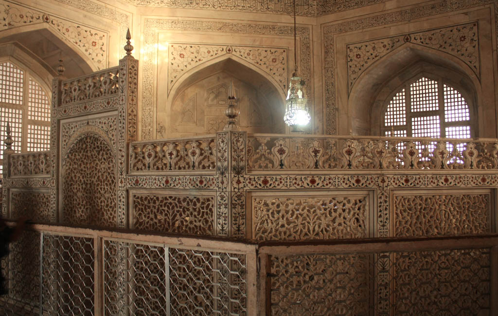
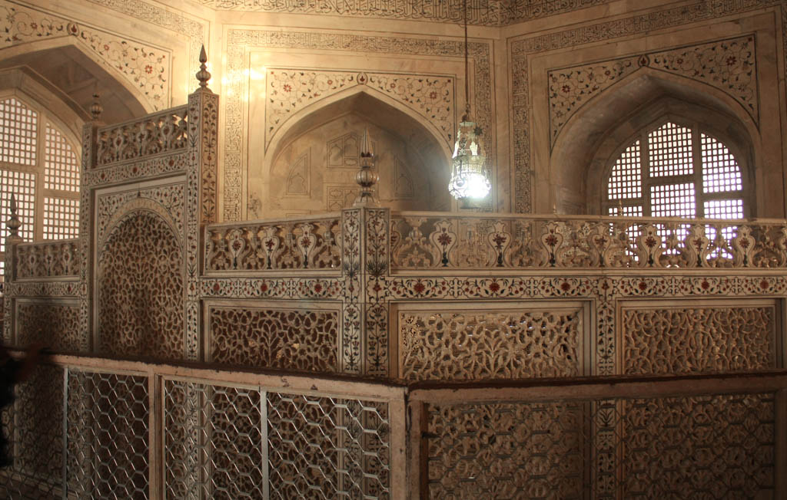
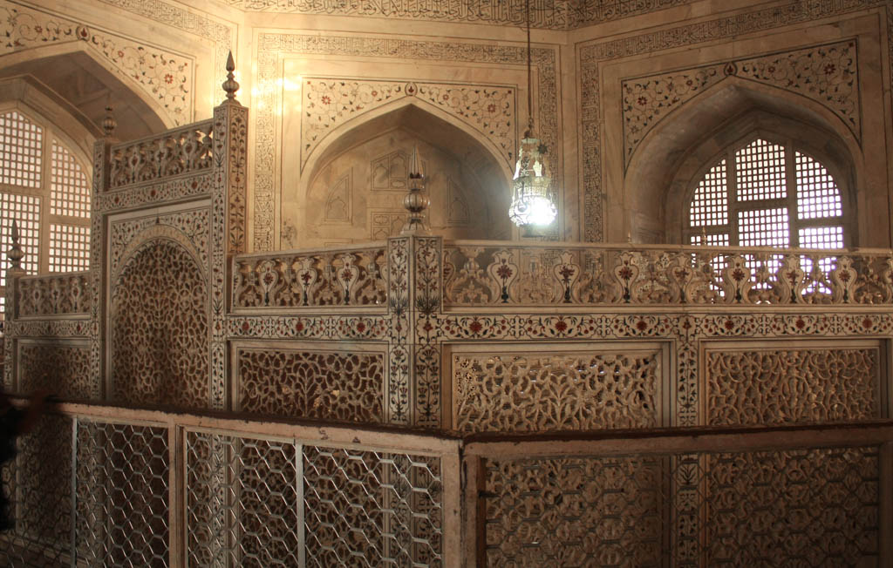

Galeria

 

O Taj Mahal foi construído pelo imperador Mughal Shah Jahan em memória de sua amada esposa Mumtaz Mahal, que faleceu durante o parto de seu 14º filho em 1631. Devastado pela perda, Shah Jahan decidiu construir um mausoléu que fosse tão belo quanto seu amor por Mumtaz. A construção começou em 1632 e foi concluída em 1653, empregando mais de 20.000 trabalhadores e artesãos de toda a Índia, Pérsia, Império Otomano e Europa.
O projeto foi liderado pelo arquiteto principal, Ustad Ahmad Lahauri. O Taj Mahal não só serviu como um monumento ao amor eterno, mas também como um símbolo do poder e riqueza do Império Mughal. A história do Taj Mahal é uma combinação de romance e trágica perda, tornando-o um dos monumentos mais célebres e visitados do mundo.
A arquitetura do Taj Mahal é uma fusão impressionante de estilos islâmico, persa, otomano e indiano. Feito inteiramente de mármore branco de Makrana, no Rajastão, o edifício é adornado com incrustações de pedras preciosas e semipreciosas, como jade, cristal, lápis-lazúli, ametista e turquesa, que formam intrincados padrões florais e caligráficos.
A cúpula central em forma de cebola, com 35 metros de altura, é cercada por quatro minaretes esguios, cada um inclinado ligeiramente para fora para evitar que caiam sobre o mausoléu em caso de terremoto. O complexo inclui uma mesquita e uma casa de hóspedes, e está situado em meio a extensos jardins projetados no estilo charbagh (um jardim persa dividido em quatro partes), representando o paraíso islâmico.
O Taj Mahal é conhecido por suas proporções simétricas perfeitas e pela beleza de seus detalhes arquitetônicos. A harmonia e o equilíbrio do design, juntamente com a pureza do mármore branco, conferem ao Taj Mahal uma qualidade de intemporalidade e serenidade.
O Taj Mahal é amplamente considerado um dos maiores exemplos de realização arquitetônica na história da humanidade. Mais do que apenas um monumento funerário, o Taj Mahal é um símbolo do amor eterno e da devoção de Shah Jahan por Mumtaz Mahal. Representa também o apogeu da arte e arquitetura Mughal, que alcançou novas alturas de sofisticação e beleza durante o reinado de Shah Jahan.
Além de sua importância histórica e arquitetônica, o Taj Mahal é um ícone cultural global, atraindo milhões de visitantes de todo o mundo todos os anos. Foi designado Patrimônio Mundial da UNESCO em 1983 e é frequentemente listado entre as Novas Sete Maravilhas do Mundo. Sua imagem é sinônimo de romance, beleza e grandiosidade, fazendo do Taj Mahal um dos destinos turísticos mais reconhecidos e celebrados do planeta.
Curiosidade 1: A construção do Taj Mahal começou em 1632 e foi concluída em 1653.
Curiosidade 2: O mármore branco usado na construção veio de Makrana, no Rajastão.
Curiosidade 3: Mais de 20.000 artesãos trabalharam na construção do Taj Mahal.
Curiosidade 4: O Taj Mahal muda de cor dependendo da hora do dia, variando do rosa suave ao branco brilhante.
Curiosidade 5: Há uma lenda que diz que Shah Jahan planejava construir uma réplica do Taj Mahal em mármore preto do outro lado do rio Yamuna, mas ele foi deposto por seu filho Aurangzeb antes que o projeto pudesse ser realizado.
Curiosidade 6: O complexo do Taj Mahal inclui uma mesquita e uma casa de hóspedes, além dos jardins. A mesquita ainda está em uso e é fechada às sextas-feiras para orações.
